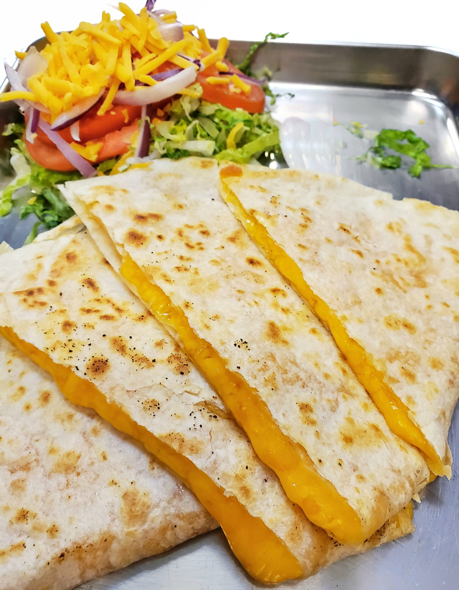

Quesidilla Recipe

Description
This is the recipe for a very simple quesidilla to
snack on.
Ingredients
- Tortilla
- Cheese
- Sour Cream or Guacamole
- Optional: Meat and peppers
Steps
- Grab two tortillas and put one on a heated pan
- Put the cheese of your choice on the tortilla,
covering the surface
- Put second tortilla on top
- Evenly flip the tortillas to get a crispt shell
- Take out when cheese is fully metled
- Dip it into sour cream or Guacamole and enjoy